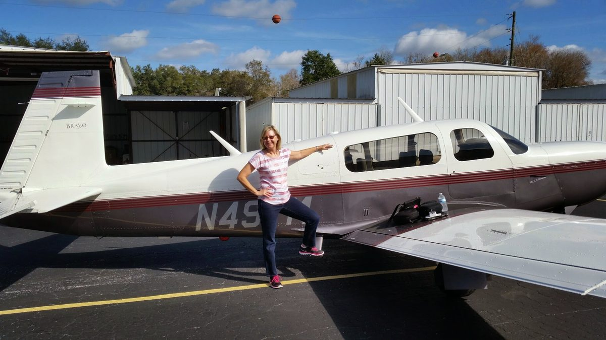
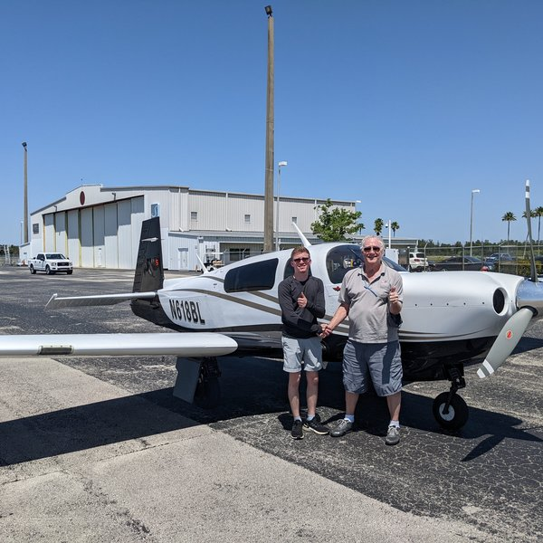
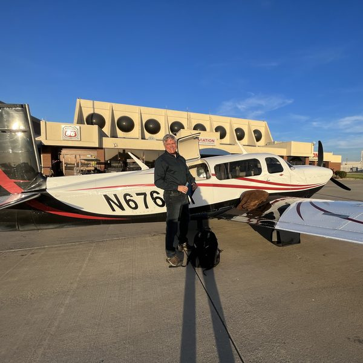
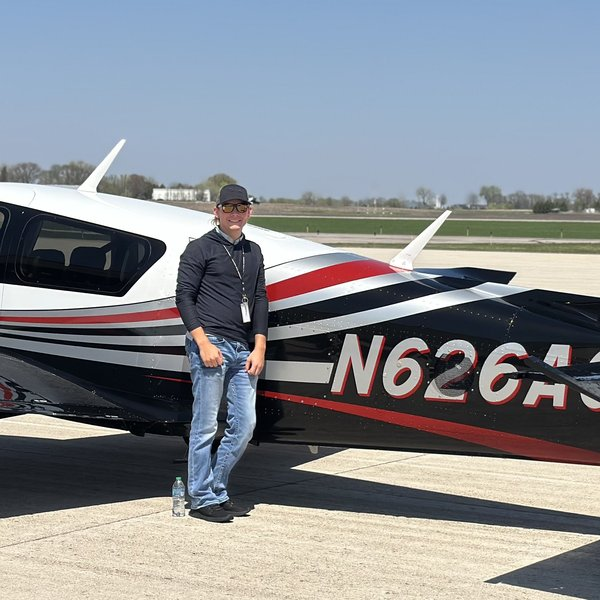
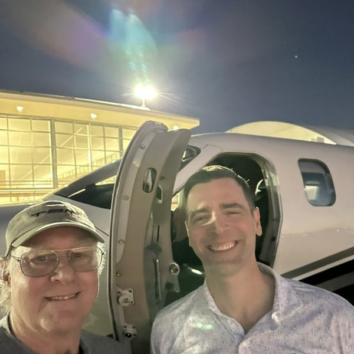
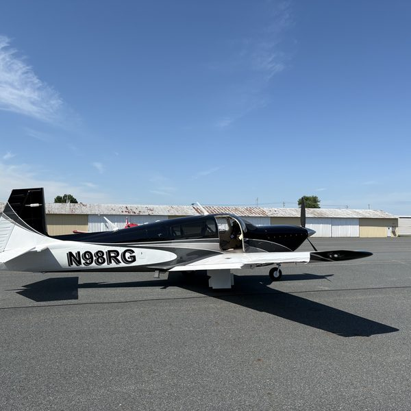
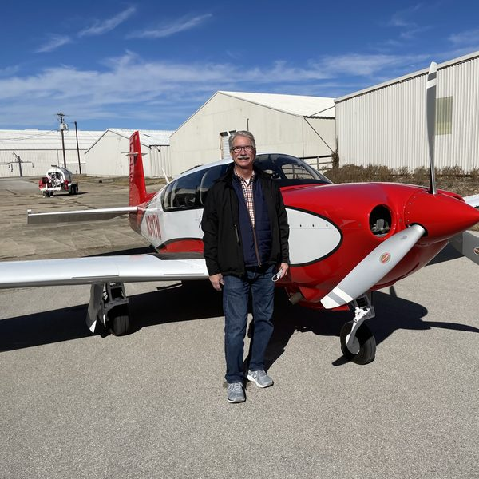
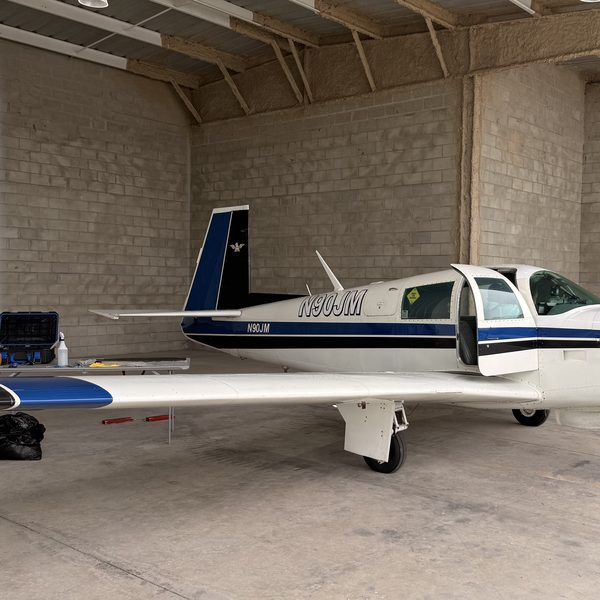
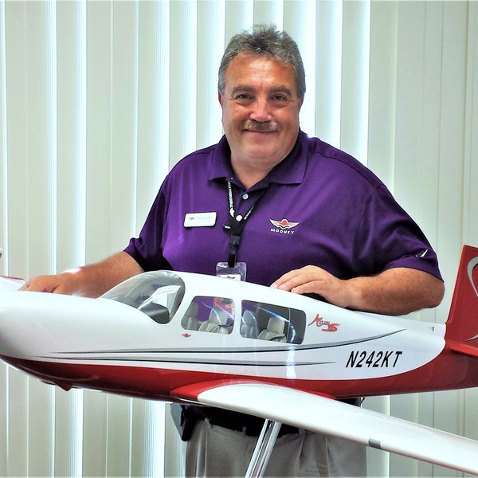

Mooney-specific flight training, in your airplane, wherever it lives
Mooney Pros, Inc. is a team of Mooney-specific flight instructors based in Tarpon Springs, Florida. We travel to you anywhere in the U.S., and we’ve trained Mooney pilots in Canada and Australia. We offer transition training, insurance checkouts, flight reviews, IPCs, instrument and commercial training, and ferry flights, all in your own Mooney. Mooney Pros never provides the aircraft.
We fly Mooneys, we own Mooneys, and Mooney training is what we specialize in. Whether you just closed on a 1965 E model or you’re picking up an Acclaim, you’ll fly with an instructor who knows your airframe, your avionics, and where Mooney pilots tend to get bitten.

What we do
- Mooney transition training Customized for your model, from a short-body M20C to an M20V Acclaim Ultra, and for your experience, using our FITS-based, scenario-driven syllabus. It’s set up so you can earn FAA WINGS credit.
- Insurance checkout training We fly the dual hours your underwriter requires before you go solo or carry passengers.
- Recurrent training, flight reviews, and IPCs These are Mooney-specific and set up for WINGS credit. A completed WINGS phase also satisfies the flight review.
- Instrument and commercial training. Several of our instructors teach instrument and commercial training in the client’s own Mooney. Contact us to talk through your goals.
- Ferry and repositioning We’ll meet you at the prebuy shop and fly your new airplane home with you, training the whole way.
- Ownership mentoring Maintenance priorities, Mooney-savvy shops, and the operating habits that keep a Mooney healthy.
Tools for Mooney pilots
- Mooney Registration Map See Mooneys on the FAA registry by city. Filter by model or state, or search by N-number or owner.
Open the map → - W&B and performance calculator Weight and balance plus performance for nine Mooney model variants, from the M20J to the M20V.
Open the calculator → - Mooney AD/SB Lookup Look up FAA airworthiness directives and Mooney service bulletins for your Mooney model and engine. Reference only; verify with your A&P/IA.
Open the AD/SB lookup →
Where we train
We come to your airplane. Our instructors live in several states, and we regularly travel nationwide. Recent trips have included New Jersey, South Carolina, Arizona, and Saskatchewan, Canada. Mike has also trained Mooney pilots in Bathurst, New South Wales, for the Australian Mooney Pilots Association. Florida training is available too (Mooney flight training in Florida).
Why pilots choose Mooney Pros
- Mooney-specific instructors. Mooney Pros instructors were vetted by Mooney International until the factory shut down. Mike Elliott now vets any new additions to our elite group of instructors using the same high standards set forth by Mooney International. Michael Baraz is just such an instructor; he specializes in the M20K Rocket.
- Factory roots. Mooney Pros was formed in 2017 at Mooney International’s request to deliver factory transition training for the Ultra models. That program ended when Mooney stopped producing airplanes. The scenario-based FITS approach it was built on carries on in all our training. Our story →
- Trusted internationally. Mike traveled to Bathurst, New South Wales, to train pilots for the Australian Mooney Pilots Association, and he helped develop the association’s training manual. Our instructors have also trained in Canada.
- FAASTeam Industry Member. Mooney Pros signed a Letter of Understanding with the National FAA Safety Team in June 2025. Our transition training and IPCs are set up as WINGS activities.
- Insurance-ready paperwork. We work with your broker on the additional-insured certificate, and our syllabus is on file with at least one major aviation insurance broker.
- Instructor matched to you. We match the instructor to your model, your avionics, your location, and your personality.
What our clients say
Build note (not for publication): Section heading was formerly “What pilots say” / “What our pilots say”; Mike retitled to “What our clients say” Oct 12, 2026. Cards come from
preview-build/testimonials.json(includes Terry L. from his May 2 email, credit approved as “Terry L.”). Mike asked whether, once we have more testimonials, this can be a rolling window. Platform decision still open/deferred.

Mooney Pros and Mike Elliott stepped in when I bought a Mooney Acclaim Type S and got me through my private pilot certificate when I was 18. I've since earned my instrument rating and now fly a Premier. The foundation Mike gave me made the transition into my TBM, and later the Premier, an easy road. He's not only my primary instructor; I consider him a trusted friend.
— Reece Gold

Mooney Pros strikes the right balance between experience and flexibility in delivering relevant, excellent-quality instruction. This is not a rote, one-size-fits-all curriculum. The company and its instructors deliver the right instruction for a given pilot and plane, all drawing from years of Mooney instruction experience. That Mike is a personable guy is just the cherry on top.
— Dan Eldridge, Mooney owner

I first reached out to Mike Elliott and Mooney Pros when I purchased my first Mooney Acclaim and needed transition training. From the beginning, I was extremely impressed with Mike’s professionalism, knowledge, and experience. His approach to training was thorough, enjoyable, and gave me the confidence to safely operate my new aircraft.
Years later, when my son Brayden purchased a Mooney Ovation Ultra, there was no question who I wanted to handle his transition training and competency checkout. I immediately contacted Mike and Mooney Pros, and once again, the experience exceeded my expectations.
As a pilot and a father, there’s no greater endorsement I can give than trusting someone with both my own training and my son’s. Mike is an exceptional instructor, and I would highly recommend Mooney Pros to anyone looking for professional, knowledgeable, and personalized Mooney flight training.
— Dusty Emmert

Mike was and is a true mentor in the best way. We learned at my pace with a focus on safety, personal minimums and practical knowledge... I was so happy with Mike that I also used Mooney Pros to do my IFR ticket.
— Dr. Ryan Ahern, former Acclaim Type S owner, now flying a TBM 850

Mooney Pros made moving my Mooney from one country to another about as easy as it gets. Sam handled the airplane and all the logistics, and Mike's office took care of the paperwork, including the N-number transfer. I actually did nothing. Mike had Maxwell do the pre-purchase, which proved invaluable given the issues we found. Mike also got me and the plane airworthy. Worth every penny, and I wouldn't hesitate to use Mike and Sam again.
— Dan B., N98RG

Mooney Pros helped me transition into the Acclaim, M20TN, in 2020 and have been my go-to for IPCs since then. My instructor Mike provided detailed knowledge on Mooneys and the Acclaim in particular. I owned an Ovation3 several years earlier but wanted to understand the turbo-normalized differences in flying and maintenance. Great people, experience, and knowledge transfer!
— Chuck Taylor, Evansville, IN

Three days with Rob McGuire taught me more about actually flying my Mooney than my entire private pilot training. He's friendly, demanding, and exactly the kind of instructor I needed. He kept working with me until I got it right. The lessons stuck, and I'd absolutely recommend Mooney Pros to another Mooney owner.
— Bob Noriega, Tampa

Mooney Pros, an FAA Industry Member training provider, offers a structured, FITS-based transition training program that introduces you to the systems and flight characteristics of your new plane. Their seasoned master instructors provide a depth of knowledge that makes ownership a pleasure.
— Richard Simile, Owner, Thunderbird Aircraft Sales
Your training approach, with its focus on safety, process, and discipline, was exactly what I needed. Sam is an incredible instructor, as you know, and his style combined with your format fit my needs perfectly.
— Terry L.
Call to action
Tell us your Mooney model, where it’s based, and what your insurer requires. We’ll match you with the right instructor and send you a quote. Call (317) 344-9427 · Email mike@mooneypros.com · Start your training request →